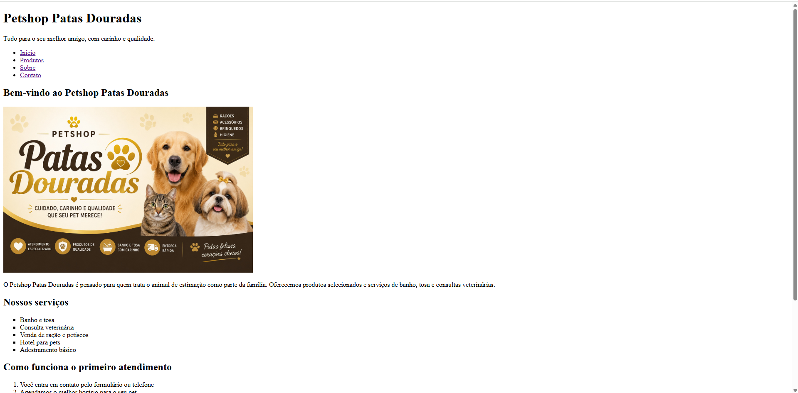
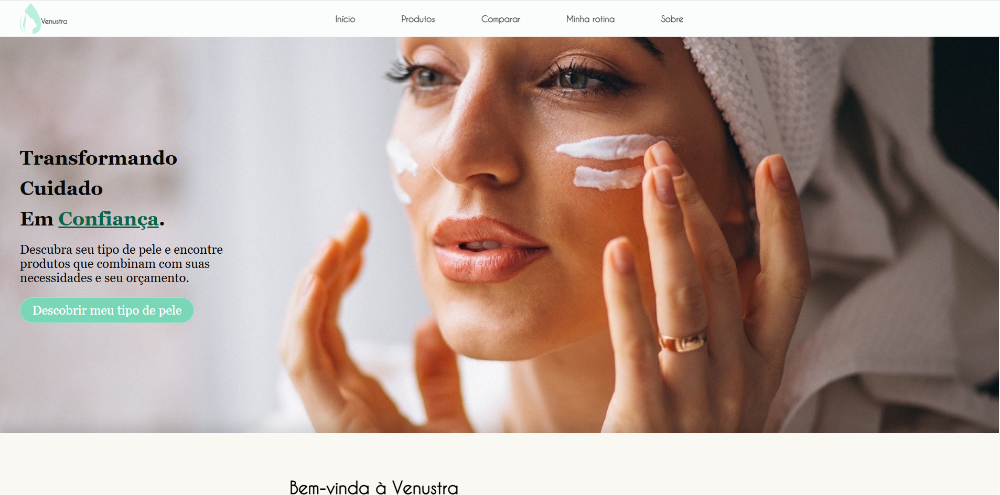

Petshop Patas Douradas (em construção)
Site fictício de um petshop desenvolvido com HTML semântico como primeiro passo antes da estilização com CSS.

Saiba mais
Alguns de meus projetos acadêmicos desenvolvidos:
Site fictício de um petshop desenvolvido com HTML semântico como primeiro passo antes da estilização com CSS.

Saiba mais
Plataforma web acadêmica, feita em grupo, que ajuda mulheres de baixa renda a cuidar da pele sem depender de produtos caros. O site tem um questionário para identificar o tipo de pele, um catálogo de produtos, uma ferramenta que compara o custo-benefício de produtos (preço por 100 ml ou 100 g) e uma área de rotina de skincare. Desenvolvido com HTML, CSS e JavaScript e versionado com Git e GitHub.

Saiba mais